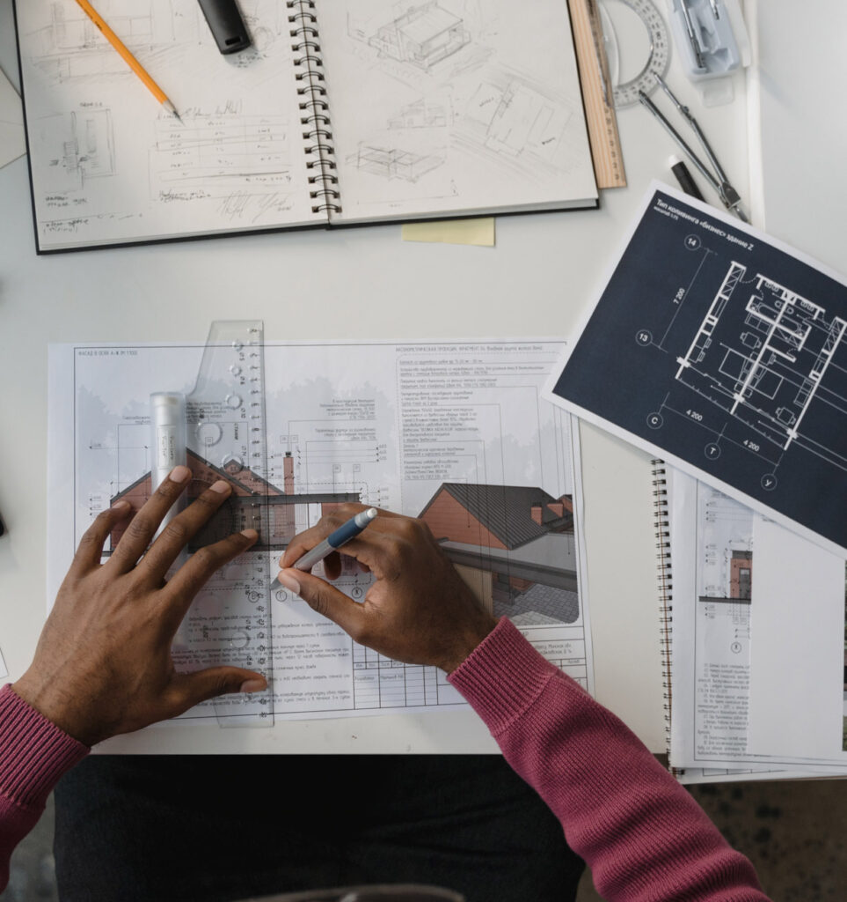

- Home
- /
- Services
Our Services
A powerful combination of advisory, project management, design management, and cost consultancy, designed to protect your commercial interests and deliver with confidence.
What We Offer
Comprehensive Project Services
Our services are structured to protect your commercial interests, reduce risk, and ensure your project moves forward with discipline, transparency, and strategic alignment.

Client-Side Advisory Services
Strategic guidance that helps you make informed decisions, reduce risk, and align your project with your commercial goals. We are your independent voice in every project conversation.
- Strategic Advisory & Project GuidanceWe support clients from day one with structured advisory that helps shape the project's direction, commercial viability, and delivery strategy. We analyse your needs, assess risks, and guide you toward informed decisions that protect your investment.
- Client RepresentationWe act as your independent representative, ensuring your objectives are communicated, upheld, and executed by the entire project team.
- Design Review & Technical AdvisoryWe evaluate design proposals, identify gaps, highlight risks, and recommend improvements to support cost efficiency, constructability, and long-term performance.
- Risk & Opportunity ManagementWe identify risks early, assess impact, propose mitigation strategies, and ensure decisions are proactive rather than reactive.
- Stakeholder Advisory & CoordinationWe simplify communication between consultants, contractors, authorities, and investors, keeping everyone aligned with your priorities.
Best for: Clients who need clarity, strategic direction, and a trusted advisor to protect their project.
Enquire Now

Project Management Services
Disciplined coordination, progress control, and structured execution that keeps your project delivered on time, on cost, and to the expected quality.
- End-to-End Project Delivery ManagementWe implement structured project management practices to ensure your project is delivered with precision while managing time, cost, quality, and scope effectively.
- Progress Monitoring & ReportingClear, transparent reporting gives you full visibility over your project's status, risks, and key decisions.
- Construction Oversight & Quality MonitoringWe provide site oversight, contractor coordination, and performance evaluation to ensure the construction process stays compliant and efficient.
- Procurement, Tender Support & Contract AdministrationWe assist in contractor selection, tender evaluation, negotiations, and contract documentation, ensuring commercial fairness and value for money.
- Program & Schedule ControlWe track milestones, manage critical paths, and ensure your project stays on schedule.
Best for: Clients who want structured execution and reliable delivery aligned with their commercial objectives.
Enquire Now

Design Management Services
We lead and advise the design process to ensure every discipline remains aligned with the client's objectives, technically sound, commercially viable, and strategically planned.
- Design Coordination & AdvisoryWe lead and advise the design process to ensure every discipline, architectural, structural, MEP, and specialist consultants, remains aligned with client objectives and delivery strategy.
- Client-Side Design LeadershipActing as the client's representative, we ensure design development reflects your priorities, functional requirements, commercial expectations, and long-term asset goals.
- Technical Review & Risk IdentificationWe conduct independent reviews of drawings, specifications, and design proposals to identify gaps, coordination issues, constructability challenges, and cost impacts early.
- Design Program ManagementOur team oversees design timelines, milestones, deliverables, and interdependencies across disciplines to support procurement, approvals, and construction requirements.
- Value-Driven Design & Cost AlignmentWe work closely with designers and QS teams to ensure design choices reflect realistic budgets, efficient material usage, and value-engineered solutions.
- Stakeholder Engagement & Approvals SupportFrom internal teams to external consultants and statutory authorities, we coordinate all design-related communication for smooth progress and timely approvals.
Best for: Clients who want structured design coordination, clear advisory support, commercial alignment, and early risk control.
Enquire Now

Cost Consultancy Services
Accurate budgeting, cost evaluation, value engineering, and commercial assurance that protects your financial investment throughout the project lifecycle.
- Cost Planning & Budget DevelopmentWe help clients establish accurate, realistic budgets supported by value-driven cost strategies.
- Value Engineering & Cost OptimizationWe evaluate design alternatives, material choices, and construction methods to identify savings without compromising quality.
- Commercial & Cost Risk AdvisoryWe assess financial exposure, evaluate cash flow, and advise on strategies to maintain commercial stability throughout the project.
- Claims Review & Payment VerificationWe review contractor claims, variations, and payment applications to ensure compliance, fairness, and accuracy.
- Estimate Reviews & BenchmarkingWe validate consultant estimates and compare cost data to ensure your project remains commercially competitive.
Best for: Clients who want financial clarity, commercial protection, and cost certainty.
Enquire Now
Start a Conversation
Ready to Discuss Your Project?
Let us provide the clarity and commercially intelligent advisory your project deserves.